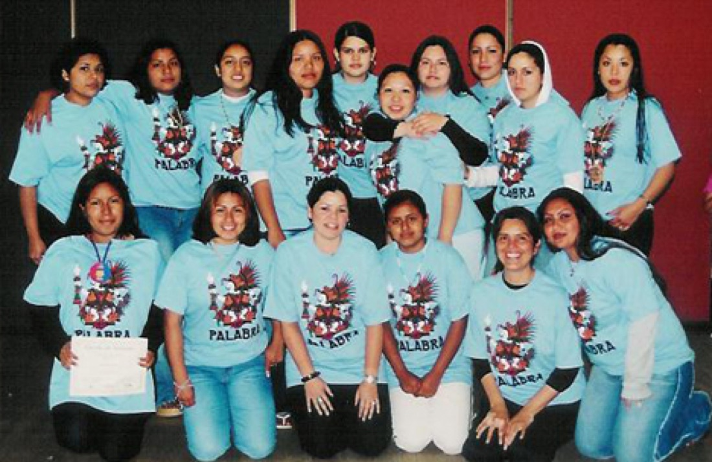

Request a training
Learn about bringing a Tlahtolli rites-of-passage training, restorative circle, or storytelling and theater workshop to your school or organization.

Request a circle at your school or program
Ask about hosting a weekly Círculo de Hombres or Cihua Ollin healing circle for the youth you serve.
You can also attend the Annual Men's Gathering or support our work.